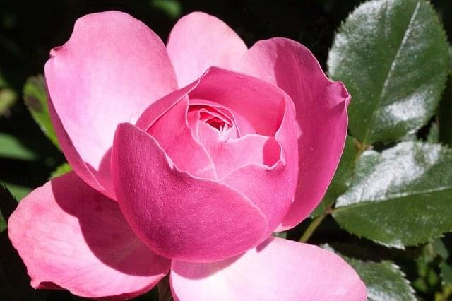

Sale

Royal Rose
$15.00
$16.00
All we know is that the rose is a symbol of beauty, of peace and of nature's bounty. These are invented or hybridized roses bred by professionals.
Color: Pink
size: Select bud`s size (inches)
Each year the best of the new annual flowers (those that only live for one year) are judged, and the winners given the All-America Selections (AAS) designation. This year’s annual flower winners, grown from seeds, include a wax-leaf begonia, an American marigold, a nasturtium, and a new Wave petunia.
Begonia Viking XL Red on Chocolate is a wax leaf begonia, with large dark bronze (hence the «chocolate» name) leaves and red flowers through the summer. Under good conditions it can form a mound 30 inches or so high and wide, so space plants apart about this distance. Or, it can be grown in a large container. The main feature of this begonia is its glossy dark foliage through the season, which is darker than similar begonias. Plants bloom best in full to part sun.
Big Duck Gold is a new marigold—the type often called African, American, Mexican (from where this type was originally found), or Aztec marigold. The three-inch wide gold flowers are held on top of the compact, 15-inch plants through the season—longer than comparable marigolds. Leaves are a nice, deep green. Similar to other marigolds, and most annual flowers, this one needs full sun to grow and bloom best. Space plants 15 to 18 inches apart, and use them as a mini hedge along walks, massed in beds, mixed in with perennials for color all summer, or in containers.
Baby Rose is a new nasturtium—the first All-America Selections winner of this flower since the 1930s. Some nasturtiums are trailing and vining, but most are compact and mounding, such as this one. Space plants about 18 inches apart, in full to part sun.
Their rose-colored flowers are a less common color for nasturtiums. Flowers bloom all summer and, unlike many nasturtiums, don’t hide among the dark green leaves but are seen above them. This selection tolerates heat to cold, rain to drought, and wind. An added bonus, similar to other nasturtiums, are the edible leaves and flowers (great in salads). Baby Rose would be a good choice for small spaces and containers.
Each year for about the past couple decades, experts from the Garden Media Group (www.gardenmediagroup.com)— a marketing firm for the home and garden industry— identify key gardening trends for the coming season. For 2019 they’ve pegged eight of these, based around the overall theme of people reconnecting with the natural world.
Gardening is one way many are «awakening» to connect with nature, often to combat work, stress, and excessive internet time. The report authors state that through this awakening, people will become new environmentalists awakened to our responsibility to save the Earth. «According to author Michael McCarthy, a modern-day Rachel Carson, finding joy in nature will help save the environment, and in turn, save us.» The report describes this as a trend from self-care, to care for Mother Earth; a trend from «Me» to «She».
More people are gardening, and gardening more, than ever before, according to the National Gardening Association’s annual survey. Many of these are the Millennial demographic (also called «Gen Y», being those born roughly between 1981 and 1996). «Average households set a spending record of $503—up nearly $100 over the previous year. Almost a third of all gardening households were those 18 to 34 years old—another record.» Within gardening, one of the hottest trends is sustainable landscapes using native plants.
The first of the specific trends pegged for 2019 is termed the «Indoor Generation.» This generation consists of nearly 90 percent of people worldwide who spend at least 22 hours a day inside. Americans spend most of their time (93 percent) either indoors or in vehicles. Children spend less than one hour daily outside, which is 50 percent less than their parents did as children.
The result of all this time inside is higher rates of obesity, cholesterol, and mental health issues such as anxiety, depression, and insomnia. Yet there is hope, as the indoor generation adds nature indoors, in the form of houseplants. Last year, 30 percent of households bought at least one houseplant, with terrariums, cactus plants, and tropical plants among top sellers. Previously considered old-fashioned, houseplants have become the new connection with nature, with about one third of purchases by Millennials.
«Screen Age» is what the second trend refers to—too much time in front of computer screens and similar devices, an addiction that can cause physical and psychological problems. «Blue light from screens can cause lack of sleep, obesity, stress, and depression.» One of the facts from this trend report is that adults now spend, on average, 11 hours a day looking at screens, and checking their phones every 10 minutes.
To counteract the «screen age», gardening is recommended, especially for younger generations. It can teach so many skills and habits, from responsibility to patience, trust, confidence, and good earth stewardship. Several means to engage youth are given, including choosing colorful fruits and vegetables, and planting containers with kid-friendly plants such as compact berry plants.
The third trend— "Golden Hearts«—refers to «the new environmentalist...looking for fulfillment outside of themselves and turning to caring for the earth.» A study by Unilever found that worldwide, about one-third of people «choose brands for their social and environmental impacts.» Volunteerism among Millennials set a record, beating the national average. Generation Z—those born after the Millennials in the late 1990s and early 2000s, roughly 12 to 21 years old—are becoming the new environmentalists. They’re involved in environmental movements, and are choosing schools based on sustainability.
Choosing flowers for Valentine’s Day, growing houseplants such as Swedish ivy, and ordering bare-root fruit trees are some of the gardening activities for this month.
When we think of this month, the holiday that often comes to mind is Valentine’s Day. Make this holiday special for someone, or several you care for, with flowers. You can buy or send an elaborate floral arrangement, or merely a bouquet or even single-stemmed roses. For color that lasts longer, consider a potted azalea, cyclamen, or cineraria.
If you’re getting cabin fever, and would like a trip to Florida but don’t have the budget or time for one, bring a little of the tropics to you. Visit a local indoor plant retailer or greenhouse for some easy-to-grow houseplants. Grape ivy, Rex begonias with their colorful leaves, and some of the variegated philodendrons will tolerate low light and dry conditions. The grape ivy and philodendron often are seen in hanging baskets.
Swedish ivy is an easy-to-grow houseplant with few problems, great for beginners or those that don’t have time to fuss with plants. The bright green, scalloped-edged leaves are on trailing succulent vines, making this a common hanging basket plant for indoors. Give this houseplant bright, indirect light as from a north or east window, or through sheer curtains. Don’t overwater, and try to keep plants between 60 and 75 degrees (F).
Now is the time to order bare-root fruit trees, which are shipped «bare root» in late winter or early spring (for planting time in your area) before they start to grow. When ordering fruit trees, make sure they are hardy for your area. Also check the descriptions to make sure that they are the best performing cultivars (cultivated varieties) for your area. Many need at least two different cultivars for cross pollination, and even those that don’t may fruit better with cross pollination. There are several flowers that you can start from seeds at the end of February as they take 10 to 12 weeks to grow large enough to set out. Some of these are perennials, such as columbine and bellflower. Early in the month start wax begonias if you have these seeds, and didn’t sow them last month. Toward the end of the month is the time to sow annual statice, wishbone flower, and annual vinca or periwinkle.
For seeds that need warmth to germinate, a heat mat underneath the flat can make a big difference. Once the seedlings are up, move them off the mat and grow them on at a cooler temperature to encourage strong, stocky growth. If a temperature isn’t given on the seed packet, aim for an air temperature of 65 to 70 degrees (F) for best growth. Too warm (especially if insufficient light) and seedlings will get tall and leggy.
If you are preparing to start seeds under grow lights or fluorescent shop lights indoors, check the tubes for signs of age. Tubes that have been used for two to three seasons probably have lost much of their intensity, even though they look fine. Dark rings on the ends of the tubes are a sign that they need to be replaced. Look for energy-efficient tubes, and ones that have a daylight or natural spectrum of light wavelengths. Otherwise, you can alternate warm white and cool white tubes. Keep lights about 6 inches above seedlings as they grow.
Other tips include checking stored summer bulbs such as dahlias, taking cold-stored and potted spring bulbs out for forcing, checking houseplants for pests, and keeping birds fed.
Kalanchoe is a popular flowering indoor plant used year round, but particularly found for sale during the Thanksgiving and Christmas seasons. This succulent plant (thick, fleshy leaves) has bright flowers, coming in various colors, and with the proper care lasts for weeks.
Kalanchoe (pronounced kal-AN-cho or KAL-an-CO-ee) come with either red, pink, orange, yellow, or white flowers. Often you can enjoy their blooms for a couple months or more. While they naturally bloom in spring, growers «force» them to bloom any time of year.
While most discard plants after bloom, you can try to rebloom them again. Grow them normally then, about 8 weeks or so before you want them to bloom, give them «short days». This photoperiod treatment is actually long nights—no light for 14 hours daily, such as in a dark closet between 6pm and 8am. During this time, reduce watering. After about six weeks you should see buds forming, at which time leave them in full light daily and water normally.
Kalanchoe like bright light, such as a south-facing window. Leggy plants mean they aren’t getting enough light. Also, they like warm temperatures as in most homes, and should not be exposed to cold below about 50 degrees (F). While the plant is growing, and in particular blooming, fertilize with product of your choice according to label directions. They don’t need much fertilizer, so you may want to use half strength, or fertilize less often than recommended.
Their succulent leaves that are designed not to dry out readily, and to store water, give the clue that they prefer drier soils. So, if in doubt, don’t water them. This is the main means plants die indoors prematurely. Watering once a week, often less, will be sufficient. Make sure if they’re in a foil wrapper or saucer that water can drain, or empty any after watering the plant. These thick leaves also make them adaptable to the normally dry air indoors during winter.
If you’re keeping your plants and they need repotting, don’t use a pot much larger than the current one, and use a well-draining potting mix such as for cacti and succulents—one often containing perlite (white granules) or sand. Clay pots help keep the soil drier than plastic ones. Just make sure pots have drainage holes.
Other than root rots from overwatering, the only problems you may encounter on kalanchoe are white mealybugs and brown scale insects. If you’re discarding the plant after bloom, these won’t be a concern. But if keeping the plant, check it weekly (when you’re watering is a good time) for such pests. If found, merely wipe off with a damp cloth or swab and rubbing alcohol. Wiping leaves periodically will keep the dust off too.
Kalanchoe is in the Crassula family, with the well-known Jade Plant a close relative. While there are 125 or more species of kalanchoe, some more upright and some hanging and many just grown for attractive leaves, most flowering selections you’ll find for sale are of one species (blossfeldiana). This originally came from Madagascar, introduced in 1932 by the German botanist Robert Blossfeld. It, and its selections, range from six to 12 inches tall.
One variation in particular that you may find is the Calandiva series. The small, tubular flowers have 32 petals instead of 4, so resemble a miniature rose. This mutant was first found by a Swedish grower in 1998 among purple flowers, and then was first introduced to the public in 2002. This series includes a wide range of colors, including salmon, lavender, and burgundy.
Keep them out of reach of dogs and cats as, if ingested, they may make pets sick.
The winter solstice, which occurs on or around Dec. 21 (in the northern hemisphere), is the first day of winter. It’s also the shortest day and the longest night of the year. While most of us barely acknowledge its passing, to earlier cultures this was a day of both trepidation and celebration. Ancient peoples often used plants to mark this day—plants we still use today for this season.
The early Romans, Egyptians, Celtics and their priests called Druids, and others observed that by December the fields were no longer producing crops, leaves had fallen off the trees, and many plants had died. Daylight hours were waning, and the sun was getting lower and lower in the sky. Without our current knowledge of astronomy and celestial cycles, they feared the sun would completely disappear, leaving them without light and warmth.
They lit bonfires to light up the skies on this longest of nights both for warmth and to coax the sun to return. They thought the fire would call out to the sun, asking it to stop its descent into the earth and return to the sky. You may see this Druid festival referred to as «Alban Arthan», translated from Welsh as «light of winter.»
The sun, considered a supreme being, was often considered ill, only to recover with the longer days after the solstice. Some experts believe the word «Yule», another term for Christmas, came from the similar Gothic and Saxon words meaning wheel. This would have referred to the cycles of the sun.
Oak was usually used for these bonfires because, being a «strong,» solid wood, it was perceived to represent strength and triumph. The Saxons and Celtics often kept an oak log— usually the entire trunk of a tree—burning for 12 hours on the eve of the solstice. If the fire did not go out during this period, the household would be protected and see an abundance of crops, good health, and other desirable things in the coming year. Many European cultures, especially the British, adopted this tradition, calling it the Yule log.
Some have written that the yule log must come from one’s own land, or be a present, not bought. This legend says that it must be kept burning slowly for 12 days, before being put out. The ashes were then scattered in fields, symbolizing the spreading of the power of the sun. The yule log remains were to be kept until the next year, to light the new fire then and thus passing on the light from one year to the next.
Other species of trees also played a significant role in solstice celebrations. The Romans, Celtics, Teutons, and Christians, for example, all considered the evergreen to be an important symbol of the continuity of life, protection, and future prosperity as it was one of the only trees to stay green during the bleak, «lifeless» winter months. Fir, cedar, and pine boughs and wreaths were used to decorate homes.
Small gifts for the gods representing the sun, earth, and harvest also were hung from the branches of pine trees in groves. Some people believe this custom evolved into the Christian tradition of decorating an evergreen tree in December.
Other sacred trees of the solstice were the yew (symbolizing death and the last day of the solar year), silver fir (winter solstice day and rebirth), and birch (new beginnings). The Celtics believed plants brought indoors during the solstice would assure woodland spirits safe refuge there during the winter months. They used yellow cedar (arborvitae) to symbolize cleansing and purity, ash to symbolize the sun (considered a supreme being) and protection, and the pine for peace, healing, and joy. Druid holiday colors of red, green and white are represented by berries (red), greens, and white berries (mistletoe) or white birch bark.